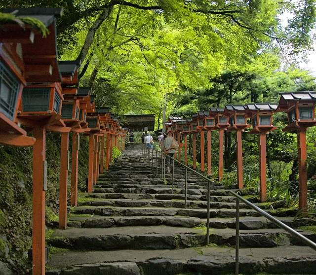

Photo & app
screen credits
These credits identify the people and sources behind the images on this page. Attribution does not imply that any author endorses KOKORO SPOT.
Kifune Shrine photograph

The Kifune Shrine photograph by Chi King is used under CC BY 2.0. The original was resized, compressed to WebP and cropped to fit the layout. It has not been recolored or had objects added or removed. The English share image also uses a cropped version of this photograph.
Genuine English app screens
The search, area picker, article and saved-list screens were captured on October 5, 2026 from the Android app running with English selected, in an Android 15 emulator. They are real app output, not translated or reconstructed Japanese screenshots. Some place names and location labels include Japanese because that is how the app displays them.
The screens were uniformly resized and compressed to WebP. The area picker shows only a crop of the selection sheet; the rest of that screen is not displayed. No words, search results or controls were replaced. The article screen contains English text about Tokyo Daijingu. The search screen and saved list show the photographs credited below. The screens may differ from the current version or another device.
The photograph portions of these screens, including their resized or cropped versions, remain subject to their respective Creative Commons licenses. Those licenses are separate from the rights in the app UI and this page. No AI-generated location photographs or replacement UI are used on this landing page.
Kifune Shrine — Kibune Jinja (KYOTO-JAPAN) (4951368080).jpg
Chi King · CC BY 2.0
Tokyo Daijingu 2019e.jpg
江戸村のとくぞう · CC BY-SA 4.0
Izumo-Taisha Haiden.jpg
MaedaAkihiko · CC BY-SA 4.0
_(4951368080).jpg){kind=link}


App icon and official store badge
The approved KOKORO SPOT icon and real app UI are used to introduce the Hinomaru Labs app. The English “Get it on Google Play” badge is the original official PNG from Google’s Partner Marketing Hub, with no changes to its artwork.